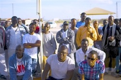
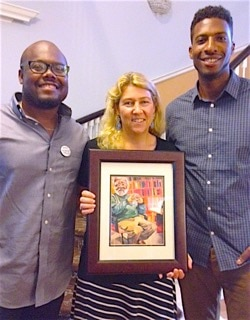

Friends,
We're thrilled to invite you to a special FOR national organizing call featuring International FOR Coordinator Rev. Lucas Johnson.
Lucas, who was previously an organizer in the Southeast for FOR-USA and a member of the National Council, will be speaking on the work of the International Fellowship of Reconciliation and other national chapters of FOR around the world.
This is an unprecedented opportunity for FOR to host a guest speaker from outside of the United States whose work is totally focused on organizing in global movements for peace and justice. We hope you can join us!
Organizing with International FOR
With International FOR Coordinator Rev. Lucas Johnson
Next Wednesday, March 16
3:00 PM Eastern, 12:00 Noon Pacific
Sign up to join the call.
You will be able to participate using any phone, or alternatively by using your computer's speaker and microphone.
Born in Germany to a U.S. military family that resisted racism and structural oppression within and beyond the armed forces, Lucas Johnson is a student of the U.S. civil rights movement and he continues to be mentored by veterans of the black-led freedom struggle. The award-winning national radio program On Being featured Lucas alongside civil rights veteran Gwendolyn Zoharah Simmons in conversation with host Krista Tippett.
Another movement elder, Dr. Vincent Harding, writes of Lucas, "My mind is filled with memories of such FOR stalwarts as Barbara Deming, Martin Luther King, Jr., James Lawson, Glenn Smiley, and Howard Thurman, each of whom I was/am privileged to count as friends and co-workers. From my perspective Lucas shares the extraordinary double-gift of fitting firmly into the company of such a historical 'cloud of witnesses' as I have just named, understanding and embodying many of their best gifts for creative visioning, community-building, and courageous servant-leadership across lines of class, race, religion, and sexual orientation; and at the same moment carrying in his own life the gift of active connections with the younger, diverse generations that FOR now needs and hopes to engage more fully than ever before."
We hope you will join us for this exciting discussion about the Fellowship of Reconciliation around the world!
Register for the call now.
 Ethan Vesely-Flad Ethan Vesely-Flad
Director of National Organizing
Fellowship of Reconciliation
Photos: Rev. Lucas Johnson at the FOR Centennial Gala (Carolina Kroon); Lucas in the Negev Desert with Eritrean refugees (Anthony Grimes); Lucas and Anthony Grimes present a tribute to their mentor "Uncle" Vincent Harding to Rev. Kristin Stoneking (FOR). |